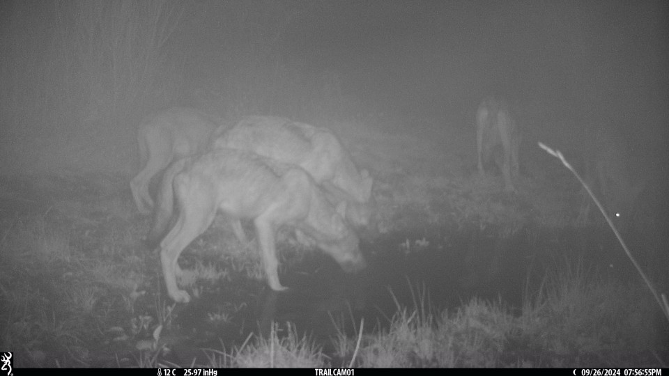

About
This repository hosts a curated set of camera trap images collected in Italy between 2021-2024. It includes per-box labels, timestamps, metric information, to support ecology, conservation, and computer vision tasks such as detection, classification.
Quick start: Download the annotations.csv, clone this site, and point your training script to the images directory. See Dataset for structure.
Downloads
Tip: Use git lfs for large files. See instructions below.
Dataset structure
| Path | Description |
|---|---|
| /images/{site}/{image}.jpg | Original images grouped by site. |
| /annotations/annotations.csv | annotations for bounding boxes and categories and metric locations. |
Example: minimal COCO annotation
{
"images": [{"id": 1, "file_name": "images/site-01/seq-0001/IMG_0001.jpg", "width": 1920, "height": 1080, "sequence_id": 1}],
"annotations": [{"id": 10, "image_id": 1, "category_id": 3, "bbox": [x,y,w,h], "area": w*h, "iscrowd": 0}],
"categories": [{"id": 3, "name": "red_fox"}],
"sequences": [{"id": 1, "site": "site-01", "utc_start": "2021-05-01T22:10:00Z"}]
}
Methods
- Sites: 576 camera stations across Italy.
- Annotation: Expert labels, QA, inter‑rater metrics.
- Ethics: Human privacy filtering, sensitive species policy.
Image gallery

License & usage
Content is licensed under CC BY 4.0 unless otherwise noted. Please credit the dataset as indicated in the citation.
- ✅ Academic & commercial use permitted with attribution
- üö´ Do not attempt to locate endangered species from the data
- üîí Human subjects filtered; report any accidental exposure
How to cite
Niccoli, N., Seidenari, L., Greco, I., Salvatori, M., Rovero, F. (2025). ItalianParks400k. https://miccunifi.github.io/ItalianParks400k/
BibTeX
@dataset{lastnameYEAR,
author = {Niccoli, N., Seidenari, L., Greco, I., Salvatori, M., Rovero, F. },
title = {ItalianParks400k},
year = {2025},
publisher = {University of Florence},
version = {1.0},
url = {https://miccunifi.github.io/ItalianParks400k/},
}
Maintainers
Media Integration and Communication Center • Contact: lorenzo.seidenari@unifi.it • Issues & requests via GitHub Issues